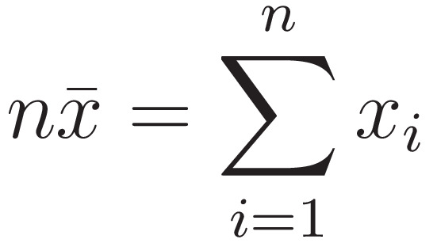

Answers
T10.
Arithmetic mean is a single value that it is used to summarize an entire set. When we calculate the average we lose
some precision but we gain synthesis.
The formula to obtain the arithmetic mean of a set of values is well known and is the following:
We can derivate this formula from different definitions of mean, that we saw in class:
- A value that substituted for all elements of the set returns the same value, so we have:

- A value that equates all the positive and negative differences between the mean and the values of the set.
The distance is calculated from a value called "c" (that is the mean itself if the sum of all the values is 0).
The formulas are:
Where the second x is c. So we have:
- A value that has the minimal distance between itself and the values of the set. The formula is:

is the value between a value of the set and the mean (c if equal 0).
It is also possible to prove that this formula is equivalent to the previous ones.
In a set we can also calculate other statistics like:
- Geometric mean, instead of the value that give the same sum we want the value that gives the same product,
indicates a central tendency of a set of numbers by using the product of their values. Formula:
- Harmonic mean, the reciprocal of the arithmetic mean of the reciprocals of the given set of observation. Formula:
- Power mean that generalize arithmetic, geometric and harmonic mean. Formula:
if p == 1 we have the arithmetic mean, ip p == 0 the geometric mean and if p == -1 the power one.
T11.
Convergence in mathematics, is the property of approaching a limit more and more closely as a variable
of the function increases or decreases or as the number of terms of the series increases.
For example, the function y = 1/x converges to zero as x increases.
Although no finite value of x will cause the value of y to actually become zero,
the limiting value of y is zero because y can be made as small as desired by choosing x large enough.
The line y = 0 (the x-axis) is called an asymptote of the function.
Given a continuos function f, we say that f(x) converges to the finite limit l for x
tends to x0 if for all ε > 0 exist δ(ε) > 0 such that for all x
satisfying 0 < | x - x0 | < δ(ε) > 0 we have that | f(x)-l | < ε. Thus:
The basic idea behind the convergence probability, is that the probability of an “unusual” outcome becomes
smaller and smaller as the sequence progresses.
A sequence {Xn} of random variables converges in probability towards the random variable X if for all ε > 0:
T12.
Statistics can be divided in two sections:
- Descriptive statistics that defines methods and processes to describe or summarize known data.
There is a known population (statistical units) thanks to which we gain information that we want to analyse.
The data gained is then stored in a dataset, and with these data we can perform different analysis like calculate
the univariate, multivariate distribution and also the different means.
- Inferential statistics on the other hand doesn't have a know population, but only a sample.
So we can through the sample gain with less precision the tendencies of the whole population.
Since the majority of the population is unknown and can’t be measured,
we have to calculate the probability of a certain event or of a certain attribute
value on the entire population through the frequency in the sample set.
An example of this is the trials for a new medicine, usually they are tested by a sample of the population.
In descriptive statistics, all the distributions
are frequency distributions from known units.
In
inferential statistics we can’t determine this (because the population is unknown),
so we have to assign to the unknown population some probability distributions,
that we can’t really observe and that are calculated from the sample set (they can generate some precision errors).
A8.
I used the same application as in the previous homework. I implemented the vertical histograms.
Source code!
A9.
The application is the one developed in class. With the left mouse button it is possible to change the position of the rectangle, with the right
mouse button change the size of the rectangle and with the mouse wheel zoom in and out.
Source code!